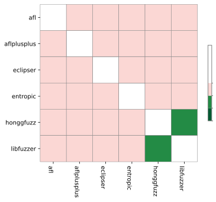
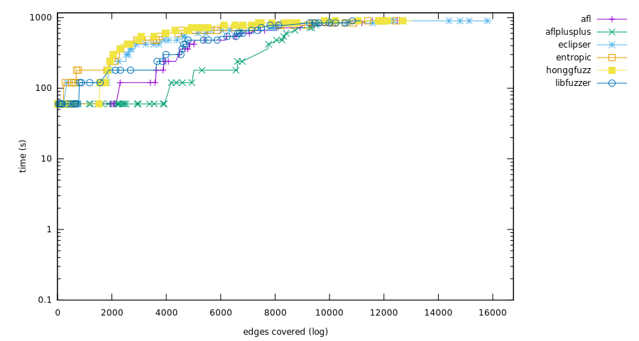
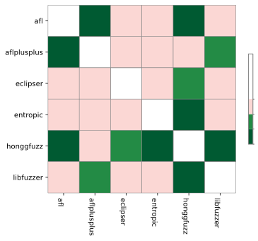
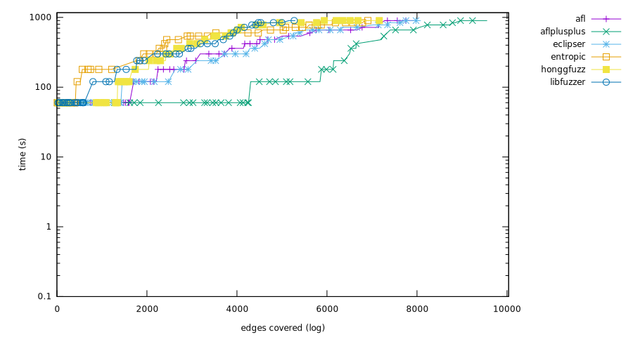
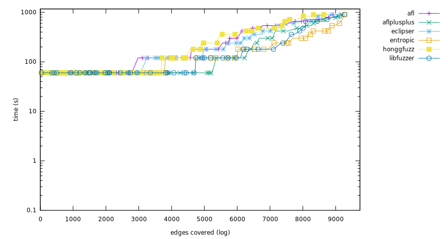

Experiment result
Critical difference
Micro-benchmark Critical difference
| Fuzzer | Rank |
|---|
| aflplusplus | 2.90 |
| honggfuzz | 2.98 |
| entropic | 3.36 |
| libfuzzer | 3.66 |
| afl | 3.87 |
| eclipser | 3.96 |
Overall (ranking by edges covered)
- honggfuzz (382,103 edges covered), success rate: 40.36%(777/1925 pairs)
- aflplusplus (377,104 edges covered), success rate: 40.21%(774/1925 pairs)
- entropic (362,026 edges covered), success rate: 39.06%(752/1925 pairs)
- eclipser (359,860 edges covered), success rate: 35.90%(691/1925 pairs)
- afl (354,263 edges covered), success rate: 36.83%(709/1925 pairs)
- libfuzzer (347,105 edges covered), success rate: 36.57%(704/1925 pairs)

bloaty_fuzz_target
Ranking
- eclipser, (15,963 edges covered), success rate: 13.83%(13/94 pairs)
- honggfuzz, (13,049 edges covered), success rate: 17.02%(16/94 pairs)
- afl, (12,759 edges covered), success rate: 12.77%(12/94 pairs)
- entropic, (12,482 edges covered), success rate: 17.02%(16/94 pairs)
- libfuzzer, (11,148 edges covered), success rate: 10.64%(10/94 pairs)
- aflplusplus, (10,259 edges covered), success rate: 8.51%(8/94 pairs)

Mann-Whitney U test
curl_curl_fuzzer_http
Ranking
- aflplusplus, (32,035 edges covered), success rate: 18.75%(18/96 pairs)
- honggfuzz, (29,914 edges covered), success rate: 16.67%(16/96 pairs)
- afl, (29,136 edges covered), success rate: 9.38%(9/96 pairs)
- eclipser, (28,916 edges covered), success rate: 10.42%(10/96 pairs)
- entropic, (28,045 edges covered), success rate: 11.46%(11/96 pairs)
- libfuzzer, (27,034 edges covered), success rate: 8.33%(8/96 pairs)
Mann-Whitney U test
freetype2-2017
Ranking
- honggfuzz, (26,080 edges covered), success rate: 14.14%(14/99 pairs)
- aflplusplus, (24,837 edges covered), success rate: 12.12%(12/99 pairs)
- eclipser, (19,457 edges covered), success rate: 12.12%(12/99 pairs)
- entropic, (17,651 edges covered), success rate: 10.10%(10/99 pairs)
- afl, (17,194 edges covered), success rate: 8.08%(8/99 pairs)
- libfuzzer, (16,951 edges covered), success rate: 8.08%(8/99 pairs)
Mann-Whitney U test

harfbuzz-1.3.2
Ranking
- honggfuzz, (23,712 edges covered), success rate: 16.49%(16/97 pairs)
- aflplusplus, (22,211 edges covered), success rate: 14.43%(14/97 pairs)
- afl, (20,170 edges covered), success rate: 16.49%(16/97 pairs)
- eclipser, (19,966 edges covered), success rate: 15.46%(15/97 pairs)
- entropic, (18,899 edges covered), success rate: 14.43%(14/97 pairs)
- libfuzzer, (18,441 edges covered), success rate: 13.40%(13/97 pairs)
Mann-Whitney U test
jsoncpp_jsoncpp_fuzzer
Ranking
- honggfuzz, (3,513 edges covered), success rate: 100.00%(96/96 pairs)
- entropic, (3,513 edges covered), success rate: 100.00%(96/96 pairs)
- afl, (3,508 edges covered), success rate: 97.92%(94/96 pairs)
- libfuzzer, (3,506 edges covered), success rate: 96.88%(93/96 pairs)
- eclipser, (3,505 edges covered), success rate: 96.88%(93/96 pairs)
- aflplusplus, (3,486 edges covered), success rate: 93.75%(90/96 pairs)
Mann-Whitney U test
lcms-2017-03-21
Ranking
- aflplusplus, (13,438 edges covered), success rate: 20.62%(20/97 pairs)
- honggfuzz, (12,931 edges covered), success rate: 24.74%(24/97 pairs)
- eclipser, (11,341 edges covered), success rate: 15.46%(15/97 pairs)
- afl, (10,810 edges covered), success rate: 19.59%(19/97 pairs)
- entropic, (10,475 edges covered), success rate: 21.65%(21/97 pairs)
- libfuzzer, (10,310 edges covered), success rate: 17.53%(17/97 pairs)
Mann-Whitney U test
libjpeg-turbo-07-2017
Ranking
- aflplusplus, (9,558 edges covered), success rate: 52.04%(51/98 pairs)
- eclipser, (8,085 edges covered), success rate: 44.90%(44/98 pairs)
- afl, (7,934 edges covered), success rate: 45.92%(45/98 pairs)
- honggfuzz, (7,208 edges covered), success rate: 35.71%(35/98 pairs)
- entropic, (6,993 edges covered), success rate: 35.71%(35/98 pairs)
- libfuzzer, (5,298 edges covered), success rate: 28.57%(28/98 pairs)

Mann-Whitney U test
libpcap_fuzz_both
Ranking
- honggfuzz, (18,934 edges covered), success rate: 39.78%(37/93 pairs)
- aflplusplus, (18,771 edges covered), success rate: 41.94%(39/93 pairs)
- entropic, (18,551 edges covered), success rate: 35.48%(33/93 pairs)
- libfuzzer, (18,263 edges covered), success rate: 36.56%(34/93 pairs)
- eclipser, (16,173 edges covered), success rate: 31.18%(29/93 pairs)
- afl, (15,752 edges covered), success rate: 35.48%(33/93 pairs)
Mann-Whitney U test
libpng-1.2.56
Ranking
- aflplusplus, (6,412 edges covered), success rate: 76.53%(75/98 pairs)
- honggfuzz, (5,691 edges covered), success rate: 65.31%(64/98 pairs)
- entropic, (5,641 edges covered), success rate: 61.22%(60/98 pairs)
- afl, (5,380 edges covered), success rate: 63.27%(62/98 pairs)
- libfuzzer, (5,332 edges covered), success rate: 53.06%(52/98 pairs)
- eclipser, (5,236 edges covered), success rate: 61.22%(60/98 pairs)
Mann-Whitney U test
libxml2-v2.9.2
Ranking
- honggfuzz, (31,721 edges covered), success rate: 63.92%(62/97 pairs)
- eclipser, (30,071 edges covered), success rate: 52.58%(51/97 pairs)
- aflplusplus, (29,895 edges covered), success rate: 47.42%(46/97 pairs)
- afl, (29,511 edges covered), success rate: 51.55%(50/97 pairs)
- entropic, (29,231 edges covered), success rate: 46.39%(45/97 pairs)
- libfuzzer, (27,263 edges covered), success rate: 38.14%(37/97 pairs)
Mann-Whitney U test
libxslt_xpath
Ranking
- aflplusplus, (21,557 edges covered), success rate: 32.99%(32/97 pairs)
- afl, (20,042 edges covered), success rate: 27.84%(27/97 pairs)
- honggfuzz, (19,974 edges covered), success rate: 28.87%(28/97 pairs)
- eclipser, (19,933 edges covered), success rate: 26.80%(26/97 pairs)
- entropic, (19,895 edges covered), success rate: 29.90%(29/97 pairs)
- libfuzzer, (19,892 edges covered), success rate: 31.96%(31/97 pairs)
Mann-Whitney U test
mbedtls_fuzz_dtlsclient
Ranking
- aflplusplus, (4,494 edges covered), success rate: 38.14%(37/97 pairs)
- honggfuzz, (3,896 edges covered), success rate: 32.99%(32/97 pairs)
- afl, (3,681 edges covered), success rate: 31.96%(31/97 pairs)
- entropic, (3,507 edges covered), success rate: 32.99%(32/97 pairs)
- eclipser, (3,441 edges covered), success rate: 28.87%(28/97 pairs)
- libfuzzer, (2,635 edges covered), success rate: 29.90%(29/97 pairs)
Mann-Whitney U test
openssl_x509
Ranking
- entropic, (10,899 edges covered), success rate: 12.50%(12/96 pairs)
- libfuzzer, (10,326 edges covered), success rate: 9.38%(9/96 pairs)
- aflplusplus, (9,363 edges covered), success rate: 9.38%(9/96 pairs)
- afl, (8,576 edges covered), success rate: 10.42%(10/96 pairs)
- honggfuzz, (7,681 edges covered), success rate: 9.38%(9/96 pairs)
- eclipser, (7,554 edges covered), success rate: 10.42%(10/96 pairs)
Mann-Whitney U test
openthread-2019-12-23
Ranking
- entropic, (9,278 edges covered), success rate: 70.53%(67/95 pairs)
- libfuzzer, (9,268 edges covered), success rate: 68.42%(65/95 pairs)
- aflplusplus, (9,187 edges covered), success rate: 66.32%(63/95 pairs)
- afl, (8,920 edges covered), success rate: 60.00%(57/95 pairs)
- eclipser, (8,885 edges covered), success rate: 63.16%(60/95 pairs)
- honggfuzz, (8,742 edges covered), success rate: 55.79%(53/95 pairs)

Mann-Whitney U test
php_php-fuzz-parser
Ranking
- honggfuzz, (44,765 edges covered), success rate: 14.58%(14/96 pairs)
- entropic, (44,594 edges covered), success rate: 13.54%(13/96 pairs)
- aflplusplus, (41,555 edges covered), success rate: 16.67%(16/96 pairs)
- libfuzzer, (40,855 edges covered), success rate: 13.54%(13/96 pairs)
- afl, (40,544 edges covered), success rate: 12.50%(12/96 pairs)
- eclipser, (40,378 edges covered), success rate: 8.33%(8/96 pairs)
Mann-Whitney U test
proj4-2017-08-14
Ranking
- honggfuzz, (8,341 edges covered), success rate: 61.70%(58/94 pairs)
- entropic, (8,311 edges covered), success rate: 61.70%(58/94 pairs)
- libfuzzer, (8,274 edges covered), success rate: 61.70%(58/94 pairs)
- aflplusplus, (7,830 edges covered), success rate: 41.49%(39/94 pairs)
- eclipser, (7,638 edges covered), success rate: 28.72%(27/94 pairs)
- afl, (7,491 edges covered), success rate: 35.11%(33/94 pairs)
Mann-Whitney U test
re2-2014-12-09
Ranking
- aflplusplus, (27,174 edges covered), success rate: 94.79%(91/96 pairs)
- libfuzzer, (27,172 edges covered), success rate: 91.67%(88/96 pairs)
- eclipser, (27,158 edges covered), success rate: 88.54%(85/96 pairs)
- honggfuzz, (27,142 edges covered), success rate: 86.46%(83/96 pairs)
- afl, (27,055 edges covered), success rate: 87.50%(84/96 pairs)
- entropic, (26,980 edges covered), success rate: 85.42%(82/96 pairs)
Mann-Whitney U test
sqlite3_ossfuzz
Ranking
- honggfuzz, (82,087 edges covered), success rate: 36.73%(36/98 pairs)
- eclipser, (81,657 edges covered), success rate: 34.69%(34/98 pairs)
- entropic, (81,563 edges covered), success rate: 37.76%(37/98 pairs)
- afl, (81,489 edges covered), success rate: 34.69%(34/98 pairs)
- libfuzzer, (80,687 edges covered), success rate: 34.69%(34/98 pairs)
- aflplusplus, (78,182 edges covered), success rate: 32.65%(32/98 pairs)
Mann-Whitney U test
systemd_fuzz-link-parser
Ranking
- honggfuzz, (1,452 edges covered), success rate: 38.30%(36/94 pairs)
- entropic, (1,236 edges covered), success rate: 37.23%(35/94 pairs)
- libfuzzer, (1,109 edges covered), success rate: 37.23%(35/94 pairs)
- eclipser, (1,082 edges covered), success rate: 34.04%(32/94 pairs)
- afl, (1,079 edges covered), success rate: 36.17%(34/94 pairs)
- aflplusplus, (993 edges covered), success rate: 28.72%(27/94 pairs)
Mann-Whitney U test
vorbis-2017-12-11
Ranking
- aflplusplus, (5,867 edges covered), success rate: 56.70%(55/97 pairs)
- honggfuzz, (5,270 edges covered), success rate: 49.48%(48/97 pairs)
- entropic, (4,282 edges covered), success rate: 47.42%(46/97 pairs)
- eclipser, (3,421 edges covered), success rate: 40.21%(39/97 pairs)
- libfuzzer, (3,341 edges covered), success rate: 43.30%(42/97 pairs)
- afl, (3,232 edges covered), success rate: 40.21%(39/97 pairs)
Mann-Whitney U test